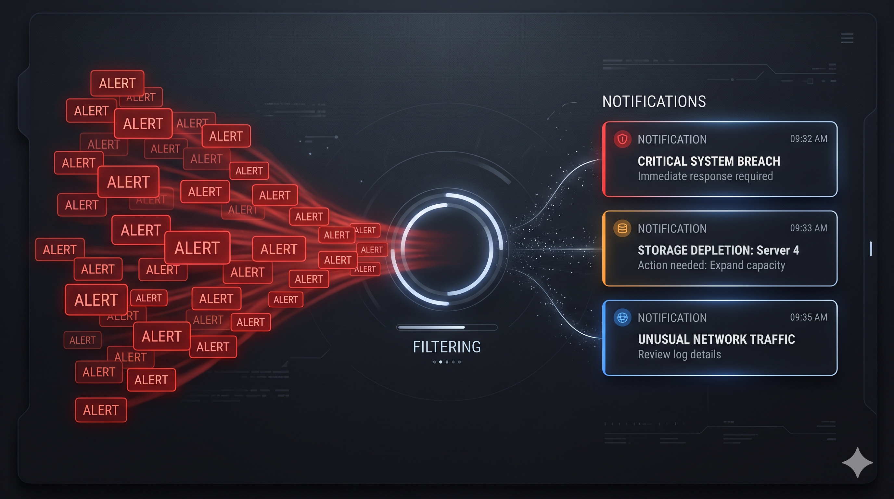

It's 6:14am. Your phone lit up at 5:50 with a Slack notification. You open the data observability channel and there are 40 alerts waiting — a cascade of red from the nightly run. Revenue metrics, session counts, a handful of dbt test failures, some row count anomalies, a schema change warning.
One of these is the reason your CFO will send a confused message at 9am. The other 39 are noise.
The problem isn't that monitoring produced 40 alerts. The problem is that you have to read all 40 to find the one that matters — and you have to do it before standup.
Why alert triage breaks at scale
Most data teams reach a predictable failure mode with observability tooling. You set up monitoring because you want to catch issues early. The tool works — it catches a lot. But "a lot" turns out to mean dozens of alerts a day across your pipeline, and suddenly you have a new problem: alert fatigue.
Think of it like a car alarm going off in the street. The first time, people look. By the third time, everyone assumes it's a false positive and ignores it. Alert fatigue in data monitoring follows the same pattern — teams start muting channels, setting higher thresholds, or just not looking until something breaks in production.
The fix isn't fewer alerts. You still want the car alarm to go off — you just want someone to tell you instantly whether it's a cat sitting on the bonnet or an actual break-in.
That's the triage problem. And it's exactly what AI is well-suited for.
What triage actually means
Triage is not anomaly detection. Your monitoring tool already does detection. Triage is classification: given a set of alerts that have already fired, which ones need human attention right now, which can wait, and which can be auto-resolved?
The classification dimensions that matter:
A human triage analyst does all four of these intuitively — but it takes five minutes per alert, knowledge of the full pipeline, and a clear head at 6am. AI can do the same classification in seconds if you give it the right context.

The context AI needs
Sending raw alert notifications to an LLM is like asking a doctor to diagnose from symptoms alone, with no patient history and no list of current medications. The symptom is "row count dropped." What the doctor actually needs: what this patient's baseline looks like, what changed recently, and whether the upstream organ is also failing.
The mistake is feeding raw alert notifications to an LLM and asking it to triage. Alert notifications contain very little information — usually just a model name, a metric, and a threshold breach. You need to enrich each alert before the LLM can reason about it.
For each alert, you need:
alert_context = {
"alert_id": "alert_0042",
"model": "fct_daily_revenue",
"check_type": "row_count_anomaly",
"expected_range": "8000–12000",
"actual_value": 4200,
"fired_at": "2026-06-28T05:47:00Z",
"historical_false_positive_rate": 0.12, # this alert fires ~12% of runs without a real issue
"upstream_failing": ["stg_stripe_events"], # models upstream that also failed this run
"downstream_dependents": 14, # models + exposures downstream
"last_git_change": "2 days ago", # how recently the model was modified
"recent_same_alert_count": 0, # how many times this fired in the last 7 days
}
The two most important enrichments are upstream failures and historical false positive rate. If a model failed because its source failed, the alert is not actionable — you fix the source. If a particular alert has a 40% historical false positive rate, the LLM needs to know that before it suggests waking someone up.
dbt's manifest.json and run_results.json contain the lineage and run status you need to compute upstream failures and blast radius automatically. Parse them in your triage script rather than maintaining a separate graph.
The triage script
The classification rules in the prompt work like a rubric posted on the wall of a call centre: the clearer the rules, the more consistent the output — regardless of which LLM version is on shift.
Here's the structure that works in practice. The key design decisions: batch all alerts into one prompt (not one prompt per alert — that's slow and expensive), use structured JSON output, and set a conservative threshold for "auto-resolve."
import anthropic
import json
client = anthropic.Anthropic()
def triage_alerts(alerts: list[dict]) -> list[dict]:
alerts_json = json.dumps(alerts, indent=2)
prompt = f"""You are a data reliability engineer triaging overnight monitoring alerts.
For each alert, classify it on four dimensions and return structured JSON.
Classification rules:
- upstream_caused: true if any model in upstream_failing is non-empty AND the alert type
is row_count or freshness (not a schema change or custom test)
- severity: "critical" if downstream_dependents > 10 AND historical_false_positive_rate < 0.2;
"high" if downstream_dependents > 3; "low" otherwise
- likely_noise: true if historical_false_positive_rate > 0.3 OR (the actual_value is within
20% of the expected range boundary)
- action: one of "page_oncall" | "fix_today" | "monitor" | "auto_acknowledge"
- page_oncall: severity=critical AND NOT upstream_caused AND NOT likely_noise
- auto_acknowledge: upstream_caused OR likely_noise
- fix_today: severity=high AND NOT upstream_caused
- monitor: everything else
Alerts to triage:
{alerts_json}
Return a JSON array with one object per alert:
{{
"alert_id": "...",
"upstream_caused": true/false,
"severity": "critical|high|low",
"likely_noise": true/false,
"action": "page_oncall|fix_today|monitor|auto_acknowledge",
"reasoning": "one sentence explaining the classification"
}}"""
response = client.messages.create(
model="claude-sonnet-4-6",
max_tokens=2048,
messages=[{"role": "user", "content": prompt}],
)
return json.loads(response.content[0].text)
The reasoning field is important — it gives the on-call engineer a one-sentence explanation they can scan, rather than asking them to re-derive the classification themselves. "Upstream stg_stripe_events failed; this is a cascade" is more useful than just "auto_acknowledge."
What to do with the output
Think of it like an emergency room: the receptionist doesn't treat patients, but they do decide who goes to the waiting room, who goes straight to triage, and who gets a doctor immediately. The triage output plays the same role — it routes, it doesn't fix.
The triage output is most useful when it routes to different channels automatically. Don't dump all results back into the same Slack channel you already muted.
def route_triage_results(results: list[dict]):
for r in results:
if r["action"] == "page_oncall":
send_pagerduty(r) # wake someone up
elif r["action"] == "fix_today":
create_jira_ticket(r) # goes into the backlog for morning
elif r["action"] == "monitor":
post_to_slack("#data-alerts-low", r) # visible but not urgent
elif r["action"] == "auto_acknowledge":
acknowledge_in_tool(r["alert_id"]) # silence without human review
log_to_audit_trail(r) # keep a record
The auto_acknowledge path is the one that saves the most time — and the one you need to be most careful about. The audit trail isn't optional. If you're automatically suppressing alerts, you need a record of every suppression so you can verify the false positive rate assumption holds and catch the cases where the AI got it wrong.
Don't auto-acknowledge schema change alerts, even if the historical false positive rate is high. A schema change in a source system is almost always worth human eyes, because it can silently corrupt downstream metrics even when no dbt test fires.
Where this breaks down
This approach works well for volume triage — reducing 40 alerts to 3 that need attention. It's much weaker on two things.
Novel failure modes. AI classifies based on patterns it can reason about from the metadata you provide. A completely new type of failure — a source system changing its timezone, a reporting calendar shift, a one-off data migration — won't have historical false positive rate data and won't be upstream-caused in the obvious sense. These tend to get classified as "fix_today" rather than "page_oncall," which means the 6am page doesn't fire even though it should.
Correlated failures that aren't lineage-linked. If two models fail at the same time for the same business reason (say, a payment provider incident that affects both your revenue and your churn models through separate lineage paths), the triage script sees two independent alerts. It won't always connect them without explicit cross-alert reasoning.
For both of these edge cases, the fix is human review of the "auto_acknowledge" log at least once a week. Treat it the same way you treat a spam folder — mostly right, but worth a periodic scan.
The payoff
On a mature pipeline with well-tuned monitoring, roughly 60–70% of overnight alerts are upstream-caused cascades or known-noisy checks. Auto-acknowledging those — with a clear reasoning field and an audit trail — means your on-call engineer wakes up to three actionable items instead of forty.
The remaining 30–40% still need human eyes. But you can give those humans the triage output alongside the alert: here's the severity, here's the blast radius, here's why we think this is real. That's a much better starting point than raw alert text at 6am.
The 90 seconds in the title is real — that's roughly the latency for a single Claude API call with 40 enriched alerts. The enrichment (parsing manifest.json, computing historical rates, resolving upstream failures) takes another minute or two in the script. The total time from "nightly run complete" to "Slack has three prioritized, reasoned alerts" is under five minutes.
What does your current alert triage process look like — are you reading every one, or have you already built something to filter the noise?
Takeaways
- Triage is not detection — your monitoring tool already fires the alerts; AI's job is classifying them by severity, cause, and required action, not finding new anomalies.
- Enrich before you prompt — raw alert notifications don't contain enough signal; upstream failure status and historical false positive rate are the two most valuable fields to add.
- Batch alerts into one prompt — one API call for 40 alerts is faster and cheaper than 40 calls, and lets the LLM reason about correlated failures.
- Route outputs to different channels — auto-acknowledge, create ticket, post to low-priority channel, and page on-call are four different destinations that prevent the triage output from becoming noise itself.
- Always keep an audit trail for auto-acknowledgements — if AI is suppressing alerts automatically, you need a log you review weekly to catch classification errors before they become blind spots.
- Novel failures and cross-lineage correlations are the weak spots — AI triage is strong on pattern-matching and weak on genuinely new failure modes; human review of the suppressed log catches what the classifier misses.